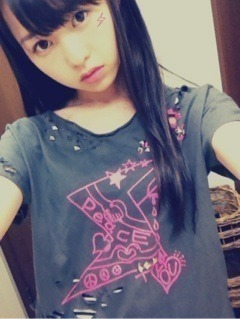

| 2012/09 01 Sat | 220回目*marika |
いつも読んでくださってる方、
初めて読んでくださった方、
コメントしてくださった方、
ありがとうございます。
初日「16人のプリンシパル」
in PARCO劇場
来てくださったみなさんは、
この舞台を見てどう思ったのだろう。
アイドルがミュージカル
一週間前から始まった舞台稽古。
正直心の中では、
一週間でできるわけないだろう
と思ってた。不安を抱えながら
全員がむしゃらに毎日稽古でした。
けど、あっという間に初日。
思うことはいっぱいあります。
自分自身をちゃんと演じられるのか
与えられた役になりきれるのか
それ以外にもたくさん
思うことがあります。
...
まだあと8回あるんだ。
チャンスはある。
みなさんに伝わりますように...
明日は握手会だー

明後日から公演続くー‼
***********
 スポーツは得意？？
スポーツは得意？？
何かしてたスポーツは？？
 運動すきだよー
運動すきだよー

意外とできるんだーってよく言われる
何もしてないよ。
AKB48の曲の中で
どの曲が一番好き？？
REVERとBeginnerがかっこいい‼
いくちゃん推しだけど
まりっかの握手会いっていい？？？
ちょっとでも興味
もってくださるだけでも嬉しいです。
ありがとうございます♪
宝塚行ったことある？
ないよー><
今回はどんな服を着るのかな？
ぶらり旅で着ていた服なども見たいな
明日の個握ぶらりで着た
ワンピ着ようかなー...
他に何かリクエストありますか⁇
**********
BLT×乃木坂46コラボTシャツ
自分のをもらったんだ


ボロボロにしたよ。
穴開けすぎた。
わかりにくいかもしれないけど、
スタッズも付けた。
リメイク楽しい

普通に私服で着れちゃうっ！
メンバーからも好評だった
 でへ
でへ
でへ

昨日、肉を食べた。
手がアブラギッシュになった
今、10秒で寝れる。
明日は朝早いから早く寝よ...
おやす...

まりか
コメント(148)
2012/09/01 22:06